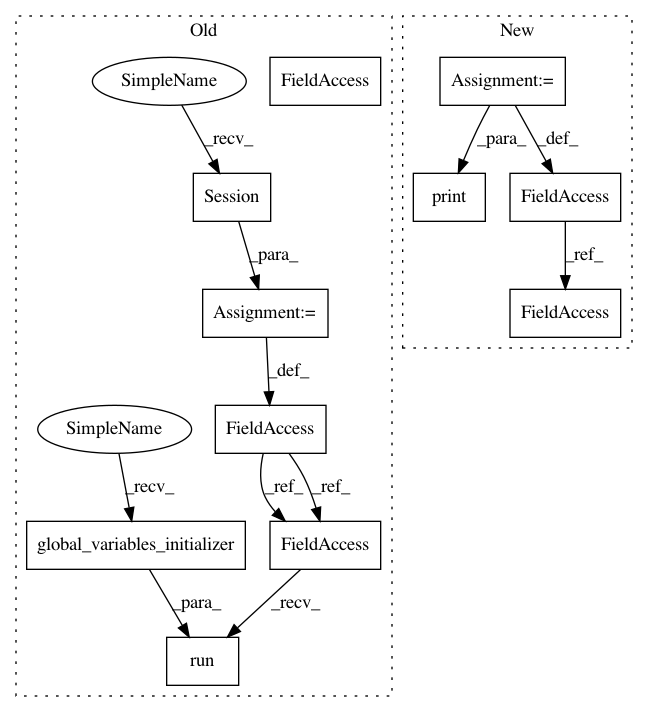

9a89654a0f5de296e066a2ae6b3b4bbfc406cd99,examples/simple_but_ugly/tf_models.py,,,#,74
Before Change
ds_data, data, labels = gen_data()
// Create tf session
sess = tf.Session()
sess.run(tf.global_variables_initializer())
config = dict(dynamic_model=dict(arg1=0, arg2=0))
After Change
config = dict(dynamic_model=dict(arg1=0, arg2=0))
// create a model
model = MyModel()
// Create a template pipeline
pp = (Pipeline(config=config)
.init_variable("num_classes", 3)
.init_variable("var_name", "num_classes")
.init_variable("loss_history", init_on_each_run=list)
.init_variable("loss_history2", init_on_each_run=list)
.init_model("static", MyModel, name="static_model", config=dict(loss="ce"))
.init_model("dynamic", MyModel, "dynamic_model",
dict(num_classes=V(V("var_name")),
images_shape=F(lambda batch: batch.images.shape[1:]),
loss="ce"))
.import_model("imported_model", model)
//.init_model("static", TFModel, "dynamic_model2", config=dict(build=False, load=True, path="./models/dynamic"))
.load((data, labels))
//.train_model("static_model", fn=trans)
.train_in_batch()
.train_model("dynamic_model", fetches=["loss", "loss"], feed_dict={"x": B("images"), "y": B("labels")},
extend_to=V("loss_history"))
.train_model("imported_model", fetches="loss", feed_dict={"x": B("images"), "y": B("labels")},
append_to=V("loss_history2"))
.run(K//10, n_epochs=1, shuffle=False, drop_last=False, lazy=True)
)
// Create another template
t = time()
//res = (pp2 << ds_data).run()
print(time() - t)
print("-------------------------------------------")
print("============== start run ==================")
t = time()
res = (pp << ds_data).run()
print(time() - t)
res.save_model("dynamic_model", "./models/dynamic")
print(res.get_variable("loss_history"))
print(res.get_variable("loss_history2"))
In pattern: SUPERPATTERN
Frequency: 3
Non-data size: 11
Instances
Project Name: analysiscenter/batchflow
Commit Name: 9a89654a0f5de296e066a2ae6b3b4bbfc406cd99
Time: 2017-10-25
Author: rhudor@gmail.com
File Name: examples/simple_but_ugly/tf_models.py
Class Name:
Method Name:
Project Name: tensorlayer/tensorlayer
Commit Name: a6652b0c1997bb47dd502bf674e0b3b9b2d09d23
Time: 2019-05-16
Author: 1402434478@qq.com
File Name: examples/reinforcement_learning/tutorial_bipedalwalker_a3c_continuous_action.py
Class Name:
Method Name:
Project Name: tensorlayer/tensorlayer
Commit Name: 6ca2a6359dc1374bfb211da8680f3d5f319cdaa5
Time: 2019-05-16
Author: 1402434478@qq.com
File Name: examples/reinforcement_learning/tutorial_bipedalwalker_a3c_continuous_action.py
Class Name:
Method Name: